August 2017
| Eureka is the smallest town in the USA to host
this level of PBR event. It happens each year during the fair and is
a big deal for our little town. It is always one of my favorite
events of the year. This year we had a large contingent of Casazzas
there - Grandpa Dan, Dallas, Ashley, Cody, Lily, Hunter, Lane, Aubrey,
Dan, Tracie, Larry, Mary Beth, Rebecca, Matt, Katie, and me. Jeb's
family and my husband had also planned to go, but took a detour to the
rock climbing area instead. They missed a great show! |
|
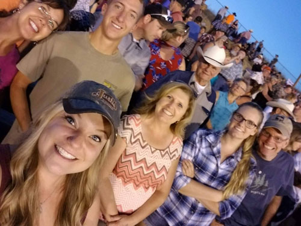 Some of the family. Thanks for the great picture Rebecca! |
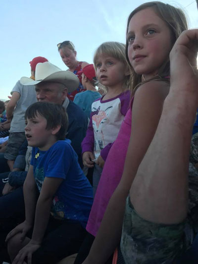 |
| Cute shot of the kids, thank you Ashley for the shot. | |
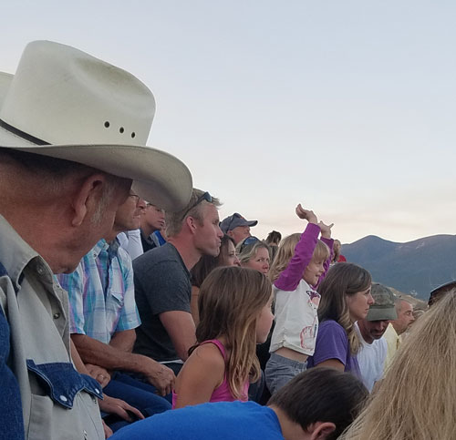 |
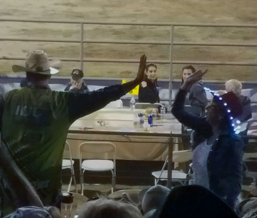 |
| Lily was really into crowd participation, even when nothing was happening. | The clown, escaping from an overly-friendly Canadian crowd member.
After he got away he quipped, "I think I almost got dual citizenship there!" |
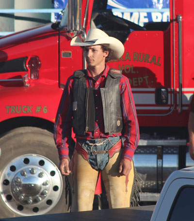 |
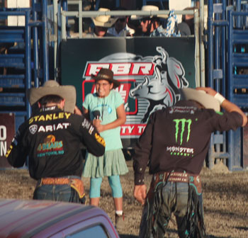 |
| Gerald Eash, brother of our pastor Eli |
Our friend Stella, after finishing the National Anthem for this huge event. We were so proud of her! |
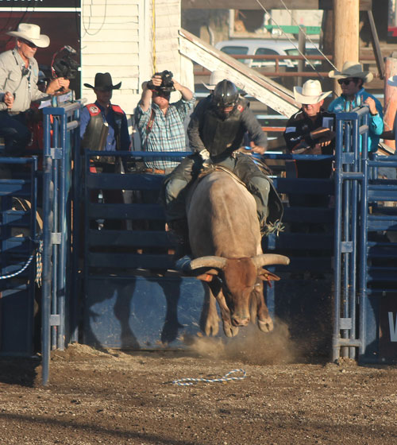 |
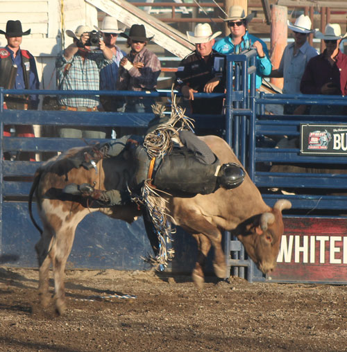 |
| And they're off! To a flying start | Hey, that's not the side you're supposed to ride |
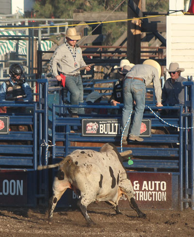 |
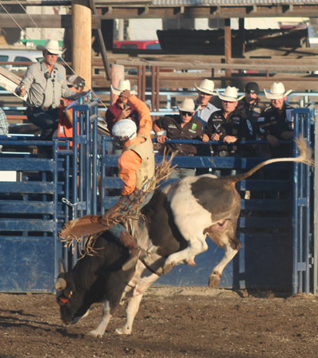 |
| This bull decided to show the judges who was boss | I'm no judge, but this looks like a good ride to my untrained eye. |
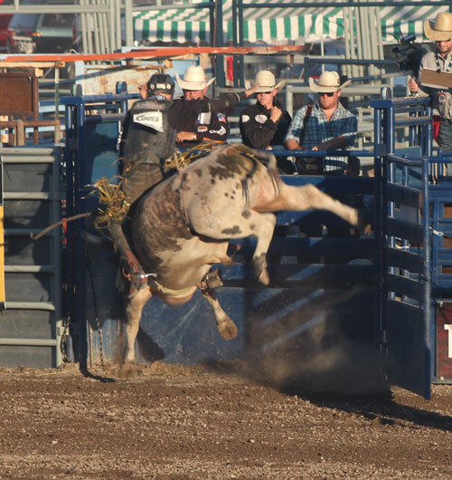 |
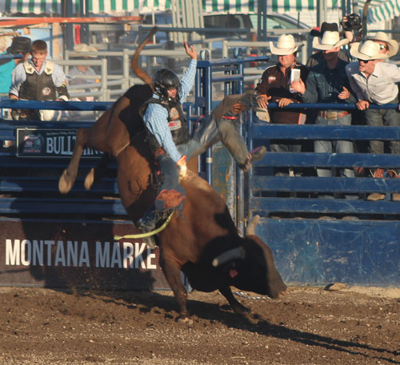 |
| This bull was airborne and spinning all at once, what a challenge! | There were not very many successful rides that night, these bulls were tough stuff. |
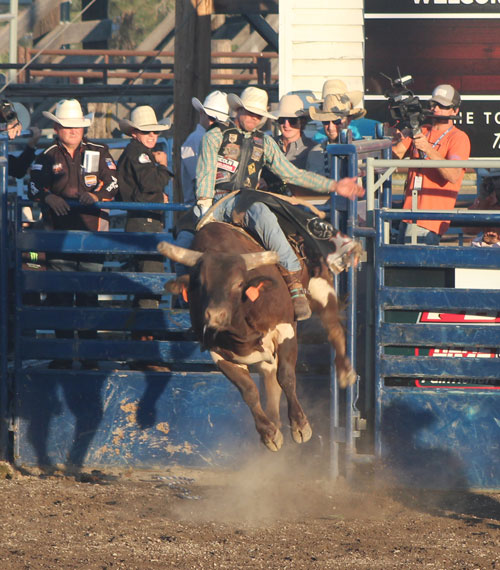 |
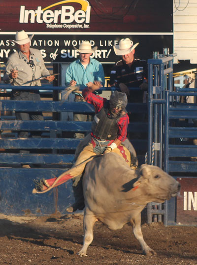 |
| Look at how high this huge animal is off the ground. Impressive. | Gerald got to ride 3 times that night and I think he got 6th place, although of course I thought he should have been placed higher. |
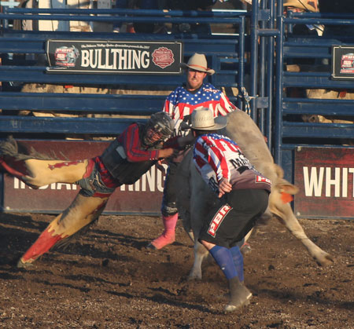 |
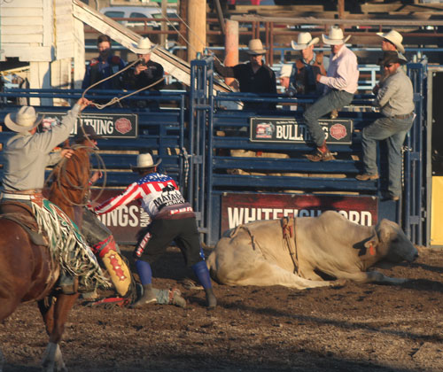 |
| The poor guy got hung up on two of his three rides, on this one the bull
spun and spun - Gerald's feet were both out horizontal at some points in the spin. |
The bull spun so much that he made himself dizzy. You can see Gerald
laying out on the ground toward the left and the bull laying out toward the right. Both were OK. |
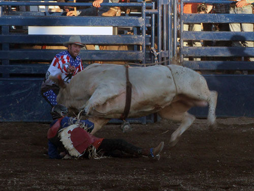 |
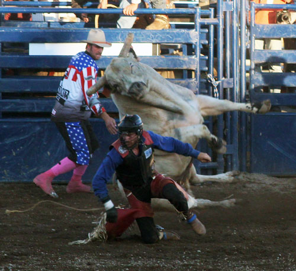 |
| This looks really bad for the cowboy, but he did get up and walk out
afterward so hopefully the bull missed him. |
Here's a spot you don't want to be in - "TIMBER" that bull is going down, soon. |
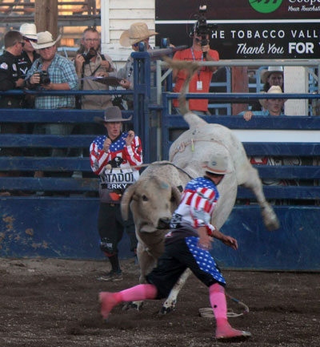 |
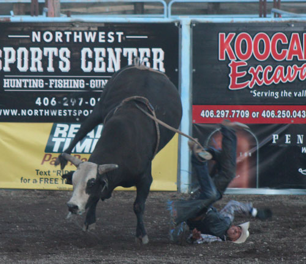 |
| The bull's landing thankfully missed the rider. The bull fighters
come in to allow him a quick get-away. |
Ouch! |
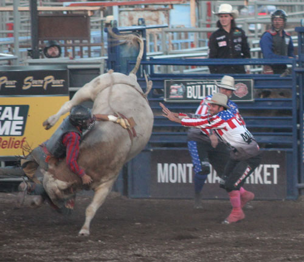 |
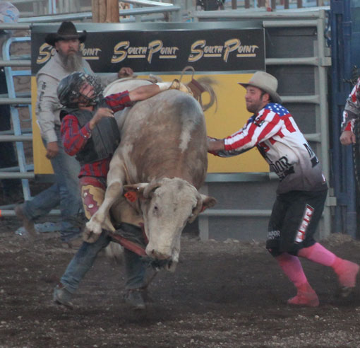 |
| Gerald's next ride resulted in a very bad hangup. He was hooked to
this bull like this for what seemed like several minutes. Cowboys and judges poured into the arena to assist the clowns in getting him freed. |
This is another shot of Gerald being hung up. This picture makes it look as
if he is holding the bull in the air with one arm. He felt good enough to make a 3rd ride after this. Tough guy! |
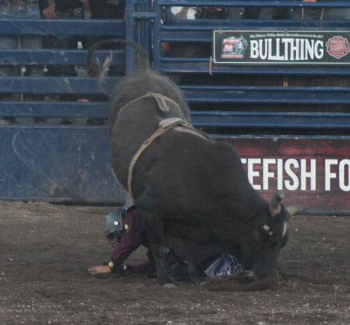 |
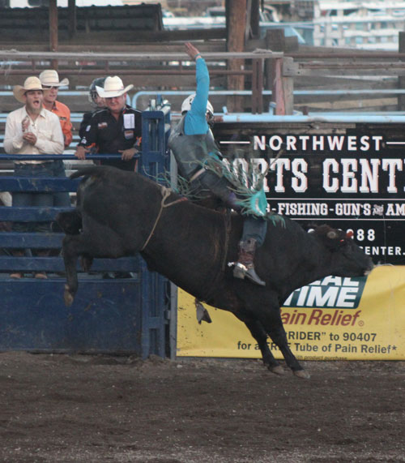 |
| Another spot you don't want to be in, he was OK. | Look at how the bull's eye looks red - I thought that was fitting. It looks like a great ride. |
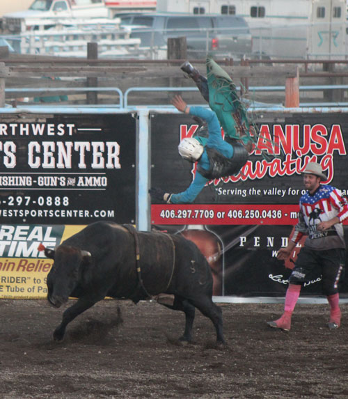 |
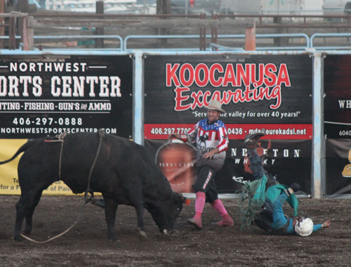 |
| This guy had the highest dismount I've ever seen. | His landing knocked him out, but he regained consciousness within a couple
of minutes. We were told he was OK. I like how this picture shows the bull fighter stepping into harm's way to protect the cowboy. That says a lot about the spirit of the sport. |